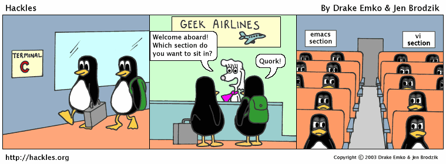

Going from vim to vim inside emacs
Well. If you been around internet any amount of time you might know about one of the oldest holywars: vim v. emacs.

Personally I’ve been in vim camp for the past 6 years, and I loved it. Vim was my everyday tool, mostly for quick’n’dirty scripts to process experimental data or plot something, and for my LaTeX writing. Vim is ubiquitous: almost every box you ssh to has vim or at least some version of vi. Learning vim was gratifying experience: concept of modal editing maybe not for everyone, but it definitely suits me. So, I thought that my relationship with vim (neovim to be precise) would last for decades. But couple of days ago when I was procrastinating by means of binge-watching YouTube I found a talk by Aaron Bieber about how he learned to stop worrying, and love emacs, which he gave on vim-centered conference. Since procrastinating by trying out a new tool is much easier and less emotionally taxing I decided to give emacs a go.
How to slowly turn emacs into better version of vim
So, here’s step-by-step dramatic reenactment of me putting together my first emacs config as a somewhat long-term vim user.
(require ‘package)
With vim I was using pathogen, then neobundle, then (after switch to neovim) plug.vim. The latter is the only manager that just worked for me, and (thanks to neovim) was running asynchronously without freezing whole editor.
Emacs has package manager built-in. And even has several repositories for packages, and package manager also handles dependencies! You can just ask it to install package you need without worrying about other packages it needs to run correctly. After some googling I found “package-use” — package manager that will load your packages on-demand (which can reduce startup time greatly) and even has function of installing missing packages on-the-fly (which is useful, since I only want to keep track of init.el, and all other stuff should happen automagically), but since most materials online for different packages I went with built-in package.el.
First, we need to enable package management at give it URLs of repositories we want to use
(require 'package)
(add-to-list 'package-archives '("org" . "https://orgmode.org/elpa/"))
(add-to-list 'package-archives '("melpa" . "https://melpa.org/packages/"))
(add-to-list 'package-archives '("melpa-stable" . "https://stable.melpa.org/packages/"))
(package-initialize)
(setq package-enable-at-startup nil)
Lines above basically enable built-in package manager and set up couple of popular package repos. Note melpa and melpa-stable: you can pin package to specific repository, so you can use bleeding edge where you want to and stable release with more wonky stuff. Next comes basically emulation of plug.vim behaviour:
;; credit: http://home.thep.lu.se/~karlf/emacs.html
(setq my-package-list
'(auctex
gnuplot
magit
org
evil
evil-leader
evil-magit
markdown-mode
smartparens
helm
linum-relative
seoul256-theme
smart-mode-line
monokai-theme
rainbow-delimiters
flycheck
))
;; install from the list if missing
(let ((refreshed nil))
(when (not package-archive-contents)
(package-refresh-contents)
(setq refreshed t))
(dolist (pkg my-package-list)
(when (and (not (package-installed-p pkg))
(assoc pkg package-archive-contents))
(unless refreshed
(package-refresh-contents)
(setq refreshed t)k)
(package-install pkg))))
(defun package-list-unaccounted-packages ()
"Like `package-list-packages`, but only shows
the packages that are installed and not in my-package-list"
(interactive)
(package-show-package-list
(remove-if-not (lambda (x) (and (not (memq x my-package-list))
(not (package-built-in-p x))
(package-installed-p x)))
(mapcar 'car package-archive-contents))))
Comments explain it pretty well — first part is just a list of packages. Next piece of code installs any missing package, and last function lists installed packages that not in your master list — that way one can easily remove anything that is not needed anymore. As the first line states, kudos go here.
(evil-mode t)
After installing evil you just add
(require 'evil)
(evil-mode t)
to your init.el, which enables evil-mode by default everywhere.
At first I thought that it will be a disappointment as any other vim emulator — generally everything works, but then some extra-weird command or combination is broken, and it turns into a paper-cut that starts to drive you insane. Evil is good. Evil is very good. After using emacs for a week I can say that I was relying on my vim muscle memory (after several hours spent on configuring evil and evil-leader key bindings, ofc). Fair warning: if you a heavy user of ex commands (e.g. :find, :set etc) — bad news, evil is extensive vi layer, not vim, so most probably it won’t work for you as good.
Also, I think it is important to mention evil-leader — package
that brings vim leader key functionality to emacs. I personally
rebinding everything with this. Only emacs chord I’m using is
C-g (break out of any precarious keystroke combination you
happen to be in). Here’s the first snippet of my evil-leader
config that brought me up to speed (which somewhat emulates
what I had in my init.vim, but I decided to start from scratch
and move some stuff around)
(require 'evil-leader)
;; enable leader everywhere
(global-evil-leader-mode)
;; space works best for me
(evil-leader/set-leader "<SPC>")
;; stuff that I needed for starters
(evil-leader/set-key
"bl" 'list-buffers
"bs" 'switch-to-buffer
"bk" 'kill-this-buffer
"bK" 'kill-buffer
"x" 'execute-extended-command
"cc" 'comment-region
"cl" 'comment-line
"sd" 'split-window-below
"sr" 'split-window-right
"so" 'delete-other-windows
"k" 'windmove-up
"j" 'windmove-down
"h" 'windmove-left
"l" 'windmove-right
)
Where emacs is [IMO] better
Emacs has a proper GUI. Not a window frame around text-based interface, but a proper GUI. Some people love to shout at each other that text editing is, well, text-based task, and a cli interface is all you need. But then same people go patch their fonts so they get pretty arrows in vim-powerline to get that aesthetic that belongs to GUI world (disclaimer: I’m guilty of this myself). This problem is solved by generating small images on-the-fly, so you can have not only arrows in your local analog of powerline (which called, surprise, emacs-powerline), but different smooth, curvy transition elements (my English fails me there) and even you can write your own elisp function, the only limit — it should return XPM image, the separator itself.
Git plugin. Magit is very simple, with interactive help built in. All the configuration that I did for it is
;; magit
(evil-leader/set-key
"g" 'magit-status
)
That’s all. A shortcut to launch it. Everything else is handled by magit-evil package. And if you press h inside magit buffer it shows key cheat sheet. So moving to magit was pretty seamless and fun.
Pet peeves and psychotic hatreds
This section is just my opinion
I do not know why, but defaults in old software are terrible.
Maybe every text editor should beep on every keystroke and
pollute project folder with all kind of .~#&*~*filename.swap.bak.bak,
and I just not smart enough to understand this. First thing that I did
when started configuring vim back in the day — disabled swap files
and moved all backups to a dot-folder in my ~. Once couple of years
when you get some kind of exotic failure in the middle of the deadline
or when you think that to edit that not-tracked-by-git file after another
all-nighter is a good idea automatic backups really save your neck. But why pollute
project tree by default if one can put it somewhere not seen is a mystery
for me. Emacs do not create swap files, but it adds autosaves to the backups…
Only good thing with this behaviour is that it is almost as easy as in vim
to move backups to the specific folder
(setq backup-directory-alist `(("." . "~/.emacs-backups"))),
and get rid of useless (since hitting :w while in normal mode comes naturally
to me) autosaves with (setq auto-save-default nil).
Startup time. After vim emacs startup is sloooooow. On my main laptop it is not such a big problem, but on my dated macbook air (which is used mostly as a portable teletype machine) I can literally see how emacs reading editor looks section at my (at the moment) not so big init.el line-by-line. Vim was ready to action right after hitting RET. There’s some ways to tweak that, but looking at how people compare the length of emacs startup time online one can say that snappy feel of vim is unattainable.
Grand Combination
Looks like I’m sticking to emacs. Evil-mode letting me to keep going without loosing speed during everyday tasks, elisp is much friendlier than vimscript, which, to be honest, I never really used, and overall feeling is somewhat, I dunno, better? If to transform fish tagline a little bit, finally we have text editor for the nineties!
In conclusion: I’m thinking about writing an update in a couple of months, so stay tuned. I understand that this post is pretty rough around the edges, but this is part of the reason why I decided to get blogging a go: to improve my non-scientific English writing skills.